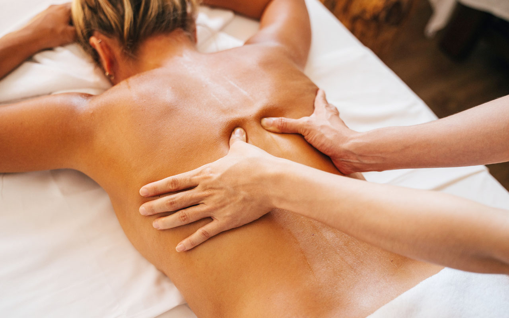
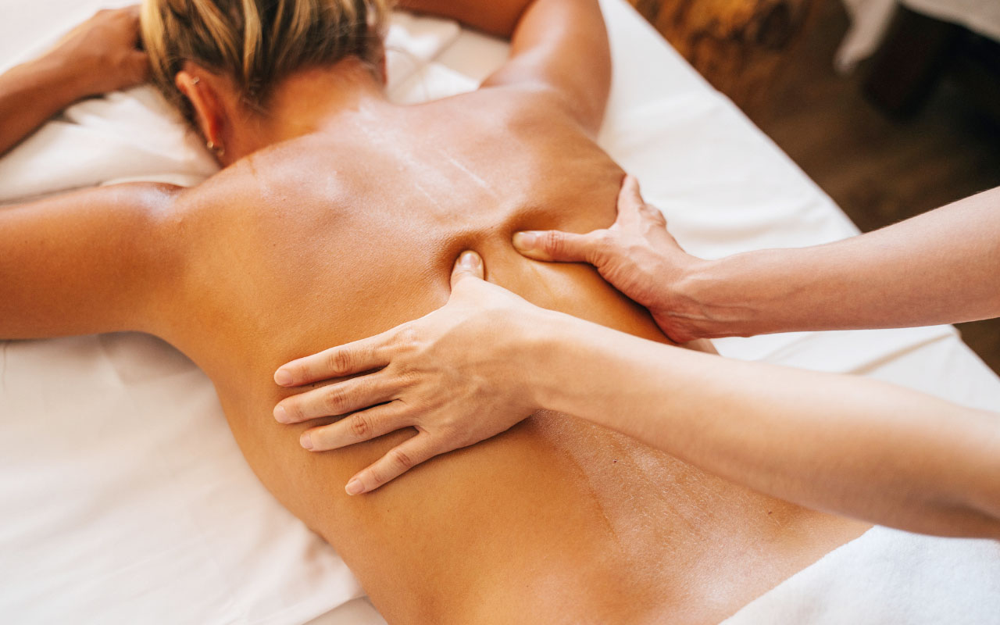
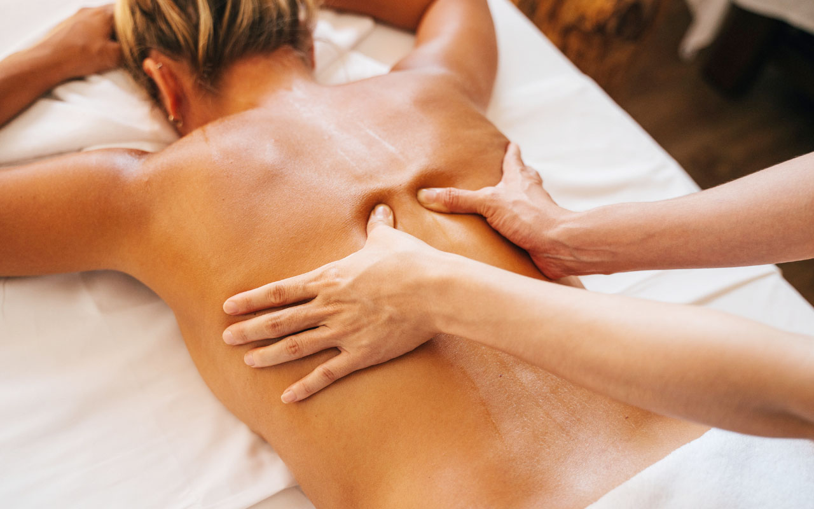

Aprende a dominar el masaje descontracturante y convierte tu habilidad en una fuente de ingresos estables desde casa con nuestro curso en video.
¡Quiero empezar mi negocio de masajes!✔ Aprende técnicas efectivas de masaje descontracturante.
✔ Inicia tu propio negocio ofreciendo masajes terapéuticos.
✔ Genera ingresos extra o vive completamente del masaje.
✔ Aprende desde casa con acceso de por vida y soporte.

Daniela Velásquez es una profesional colombiana con más de 5 años de experiencia en el mundo de la estética y el bienestar. Se enamoró del arte del masaje, enfocando su carrera en este campo para ayudar a otras personas a desarrollar sus habilidades y emprender en el sector spa.
A lo largo de su carrera, Daniela ha participado en seminarios especializados en spa de renovación y bienestar, así como en cursos de masajes moldeadores, relajantes, drenajes linfáticos y técnicas avanzadas de tonificación. Su misión es compartir sus conocimientos y motivar a otras personas a iniciar su camino en el mundo de la estética profesional.

“Con este curso armé mi propio espacio de masajes en casa y ya tengo 10 clientes fijos al mes.”
– Micaela, 29 años
“No sabía nada de masajes, y ahora tengo una nueva fuente de ingresos gracias a lo aprendido.”
– Diego, 35 años
Accede al curso por 7 días. Si no es lo que esperabas, te devolvemos el dinero sin preguntas.
Accede al curso completo por solo $49.99 USD
*Precio expresado en dólares estadounidenses (USD). La conversión a tu moneda local la realiza tu medio de pago al momento de la compra.
Quiero acceder al curso ahoraNo, está pensado para personas sin experiencia.
Recibirás un enlace de acceso en tu email para ver todos los videos del curso de inmediato.
Sí, se entrega un certificado digital al finalizar el curso.
¡Exactamente! Ese es el enfoque principal: darte herramientas prácticas para comenzar a trabajar.
Accedé al curso en video y comenzá tu camino como terapeuta independiente hoy mismo.
Sí, quiero acceder ahora